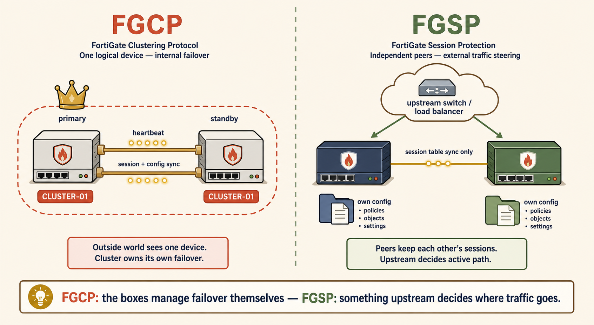
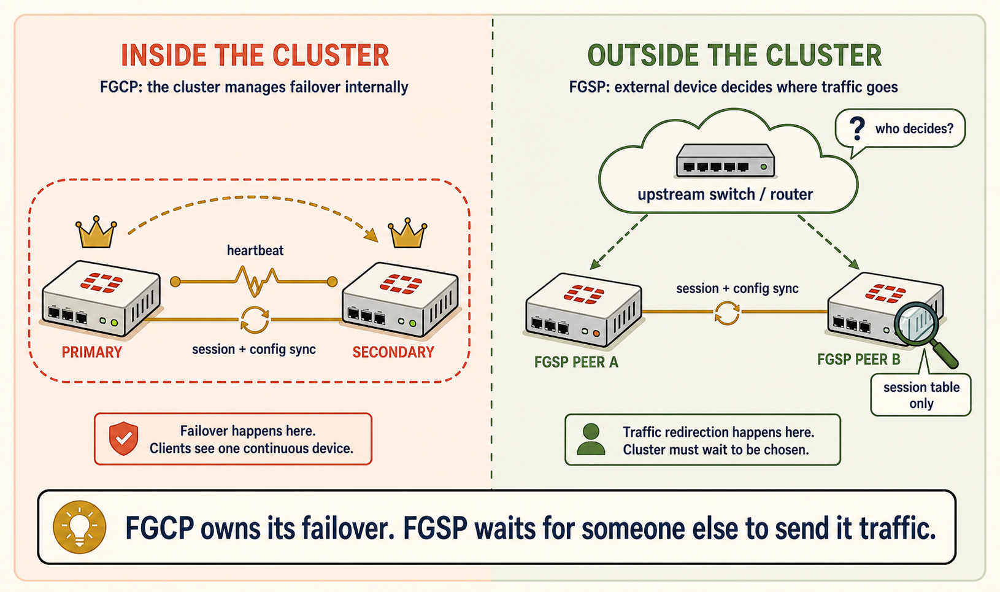
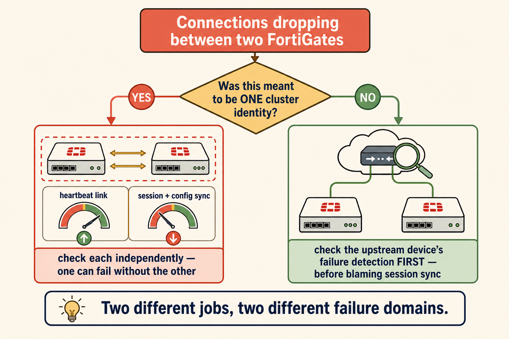

One Cluster, or Two Independent Firewalls — FGCP vs FGSP
How to tell which HA problem you're actually solving before you pick a protocol.
FGCP is one cluster that happens to have two bodies. FGSP is two independent firewalls that just tell each other what they know.
Get this backwards on the exam and you'll misread every HA scenario — waiting for a clustered failover that was never built, or forcing config sync onto two boxes that were designed to stay independent.
💭THINK FIRST · CORE DISTINCTION
Before reading on, force the recall. Both scenarios below involve two FortiGates — the only question is which relationship they have with each other.
Two datacenter FortiGates, independently managed, config has drifted between them, both actively passing live traffic right now. Which protocol fits — and why can't the other one work here?
Two edge FortiGates, one ISP uplink, one box should sit ready to seamlessly take over live VPN tunnels the instant the other dies. Which protocol — and why?
Q1 — MODEL ANSWER
FGSP. It only needs session-table data shared between the boxes — it tolerates drifted config because there's no single cluster identity to keep in sync. FGCP is disqualified because it requires near-identical configuration and a single logical cluster identity from the start; you don't retrofit it onto two already-diverged, independently-managed devices.
Q2 — MODEL ANSWER
FGCP. Heartbeat detects the failure, synchronized config means Box B is a mirror of Box A, and synchronized session state means live VPN SAs and sessions survive the takeover invisibly to the remote peer. FGSP has no election or failover logic of its own — it can't deliver a seamless single-box takeover by itself.
SECTION 01
Same Two Boxes, Two Completely Different Relationships

FGCP: one logical cluster, two bodies. FGSP: two independent firewalls sharing only session data.
images/s1-core-distinction.png
Flat minimalistic but highly detailed cartoon illustration, modern vector-art aesthetic, warm colour palette (cream background, coral accents, muted gold highlights, sage greens, soft brown outlines), clean bold line work, no gradients, no photorealism. Split composition, left half vs right half, divided by a thin dashed sage-green vertical line. LEFT HALF labeled 'FGCP' in bold coral header text: two identical FortiGate boxes (simple flat rectangular firewall icons with a small flame-shield logo) standing side by side wearing matching coral name-badges reading 'CLUSTER-01', connected by two thick gold cables labeled 'heartbeat' and 'session + config sync' with small flowing dot animation marks along them, a single dashed-outline halo drawn around both boxes together to show they present as one logical unit, a small crown icon over the current primary box and a 'standby' tag on the second. RIGHT HALF labeled 'FGSP' in bold sage-green header text: two clearly different-looking FortiGate boxes (slightly different shape/colour to show independence) standing apart with no shared halo, each with its own separate configuration folder icon beside it in a different muted colour to show config drift, a single thin gold line labeled 'session table sync only' connecting them, and above both boxes a separate cloud-shaped icon labeled 'upstream switch / load balancer' with two arrows pointing down to each box to show traffic being distributed by something external. Bottom of image: small caption bar reading 'FGCP: the boxes manage failover themselves — FGSP: something upstream decides where traffic goes.' Clean structured composition, generous spacing, educational but visually engaging, every object reinforces the networking concept.
FGCP (FortiGate Clustering Protocol) builds two FortiGates into a single logical device. Configuration is synchronized so both boxes are near-identical, a heartbeat link continuously checks liveness, and session state is synchronized so the standby unit can seamlessly assume the primary's identity — including live VPN tunnels — the instant a failure is detected. The two boxes don't just cooperate; they present to the rest of the network as one cluster.
FGSP (FortiGate Session Life Support Protocol) is a much narrower agreement between two otherwise fully independent FortiGates: share session table data, and nothing else. No config sync, no shared identity, no heartbeat-driven election. Both boxes stay alive and pass traffic simultaneously. FGSP exists purely so that if traffic for an existing connection is redirected to the 'other' box — by something upstream, not by the FortiGates themselves — that box can still find the session and forward the packet correctly instead of dropping it.
Question
FGCP
FGSP
Configuration
Synchronized, near-identical
Independent, can drift
Identity
Single logical cluster
Two independent devices
What's shared
Heartbeat + full session sync
Session table sync only
Who decides failover
The cluster itself
Something upstream (router / LB / ECMP)
Deployment fit
Matched pair, built as a cluster from day one
Independently-managed boxes, config allowed to differ
Common misconception: "Active/standby means FGCP, active/active means FGSP." False — FGCP supports active-active too. The real test is config coupling and shared identity, not traffic distribution style.
Analogy
Two firefighters sharing a badge number, versus two firefighters at different stations who just text each other every address.
FGCP: same badge number, same radio, same gear — either one can answer as "Unit 12." One identity, kept in sync continuously.
FGSP: two separate responders at separate stations, fully independent — they just text each other the address of every active call, so whichever one gets flagged down next already knows what's happening.
Dispatch deciding who gets flagged down = the upstream router/switch/load balancer, not the firefighters themselves.
🧠
MENTAL NOTE
FGCP = the two boxes manage the failover themselves (heartbeat + election + full sync = one cluster identity). FGSP = something upstream decides where traffic goes; the FortiGates only make sure that whichever box the traffic lands on already knows about the session.
ASK A QUESTION
ADD A NOTE
💭THINK FIRST · PACKET FLOW
The exam loves to test where each protocol's responsibility actually stops. This is the boundary to get precise.
In FGSP, Box A dies mid-connection. What has to happen before Box B ever sees the next packet of that connection — and whose job is that, exactly?
In FGCP, what specifically moves from Box A to Box B during failover, and what stays put?
Q1 — MODEL ANSWER
Something upstream of the FortiGates — a router, switch, ECMP path, or load balancer — has to detect Box A is gone and start sending that traffic toward Box B instead. This detection and redirection is not something FGSP itself performs; FGSP's only job is making sure Box B has the session data ready for when that redirected packet arrives.
Q2 — MODEL ANSWER
The cluster's shared identity — its virtual IP addresses and its role as primary — moves to Box B. What stays fixed is the synchronized configuration itself (policies, routes, profiles) which was already identical on both boxes before the failure. FGCP doesn't 'copy' config during failover; it was kept in sync continuously beforehand.
SECTION 02
Where Each Protocol's Job Actually Stops

FGCP owns its own failover. FGSP depends on an upstream device to redirect traffic.
images/s2-packet-flow.png
Flat minimalistic but highly detailed cartoon illustration, modern vector-art aesthetic, warm colour palette (cream background, coral accents, muted gold highlights, sage greens, soft brown outlines), clean bold line work, no gradients, no photorealism. Centre composition: a vertical thin dashed line splits the scene into 'INSIDE THE CLUSTER' (left, coral wash) and 'OUTSIDE THE CLUSTER' (right, sage wash). On the left, two small flat FortiGate icons enclosed in a single rounded dashed boundary, a gold heartbeat pulse-line and a second gold line labeled 'session + config sync' looping between them, a tiny crown icon hopping from one box to the other with a motion-arc arrow to show failover happening entirely inside the boundary. On the right, a single FortiGate icon sits OUTSIDE any boundary next to a second identical-style FortiGate icon, both under a large cloud-shaped 'upstream switch / router' icon with a question-mark bubble over it labeled 'who decides?', dashed arrows from the cloud icon pointing down to each FortiGate to show external redirection, and a small magnifying glass icon hovering near the right FortiGate labeled 'session table only' to show its limited scope. Bottom caption bar: 'FGCP owns its failover. FGSP waits for someone else to send it traffic.' Clean structured composition, generous spacing, educational and visually engaging.
This is the single most exam-relevant boundary in this topic. FGCP is self-contained — the two FortiGates own the entire failover process end to end, including deciding who is primary and taking over the shared identity. Nothing outside the cluster needs to know a failure happened.
FGSP is deliberately incomplete on its own. It solves the 'does the receiving box recognize this session' problem, but it does not solve the 'why did this box receive the packet at all' problem. That second problem belongs to whatever is distributing traffic across the two independent FortiGates in the first place — which is exactly the open question from this session, and the natural bridge into the next protocol on the blueprint.
🧠
MENTAL NOTE
FGCP's failover is entirely internal — two boxes, one boundary, nothing outside needs to react. FGSP's failover is entirely external — the FortiGates only guarantee session recognition; something else in the network has to decide where the packet goes.
ASK A QUESTION
ADD A NOTE
💭THINK FIRST · EXAM TRAPS & CHECKLIST
Quick self-test before moving on — no hints, just recall.
Why is 'active/standby vs active/active' NOT a reliable way to tell FGCP and FGSP apart?
If FGSP has no election logic, what determines which box a given packet actually lands on after a failure?
Q1 — MODEL ANSWER
Because FGCP supports both active-passive and active-active modes — active-active alone doesn't rule out FGCP. The real dividing line is whether the two boxes share one logical cluster identity and synchronized config (FGCP) or remain fully independent devices sharing only session data (FGSP).
Q2 — MODEL ANSWER
Whatever mechanism sits upstream of the two FortiGates — routing convergence, ECMP hashing, a load balancer's health check, or a first-hop redundancy protocol. FGSP has no say in this; it only guarantees that wherever the packet lands, the session will be recognized.
SECTION 03
Don't Fall For These Two Traps

Two separate jobs, two separate failure points — diagnose them independently.
images/s3-exam-traps.png
Flat minimalistic but highly detailed cartoon illustration, modern vector-art aesthetic, warm colour palette (cream background, coral accents, muted gold highlights, sage greens, soft brown outlines), clean bold line work, no gradients, no photorealism. A simple two-branch troubleshooting flowchart drawn as a friendly diagram: at the top, a coral rounded rectangle reads 'Connections dropping between two FortiGates'. Below it a gold diamond decision shape reads 'Was this meant to be ONE cluster identity?'. Left branch (labeled YES, coral arrow) leads to a small icon of two FortiGates inside a dashed boundary with two separate small gauge icons labeled 'heartbeat link' and 'session + config sync' — each gauge shown independently, one green (up) one red (down), with a caption 'check each independently — one can fail without the other'. Right branch (labeled NO, sage arrow) leads to an icon of a cloud/router above two independent FortiGates with a magnifying glass over the cloud icon and caption 'check the upstream device's failure detection FIRST — before blaming session sync'. Bottom of image: small caption bar reading 'Two different jobs, two different failure domains.' Clean structured composition, generous spacing, educational and visually engaging.
Common misconception: assuming 'active/active' automatically means FGSP and 'active/standby' automatically means FGCP. FGCP can run active-active. The dividing question is never about traffic distribution style — it's always about whether the boxes share one identity and synced config, or stay independent.
Troubleshooting checklist: (1) Confirm the intended relationship first — was this ever meant to be one cluster identity, or two independent boxes? Check for a shared HA group name/hostname. (2) If FGCP, remember heartbeat and session-sync are two separate mechanisms from Session 15's earlier reasoning — either can fail while the other keeps working, so isolate which one broke before assuming the whole cluster is down. (3) If FGSP, a 'dropped connection' complaint may not be an FGSP problem at all — check the upstream redirection mechanism first, since FGSP can only be blamed once you've confirmed traffic actually reached the other box.
Self-test — answer from memory before scrolling back:
Two independently-managed, config-drifted boxes, load-balanced by an upstream switch — which protocol?
Two identically-configured boxes behind one ISP, needing zero-touch seamless VPN takeover — which protocol?
Name the two separate jobs FGCP performs that FGSP does not.
Why is "active/active" not proof that a design must be FGSP?
After an FGSP failover complaint, which two failure domains would you check, and in what order?
🧠
MENTAL NOTE
Self-test: (1) Two independently-managed, config-drifted boxes load-balanced by an upstream switch — which protocol? (2) Two identically-configured boxes behind one ISP needing zero-touch VPN takeover — which protocol? (3) Name the two jobs FGCP performs that FGSP does not. (4) After an FGSP failover, which two failure domains would you check separately, and in what order?